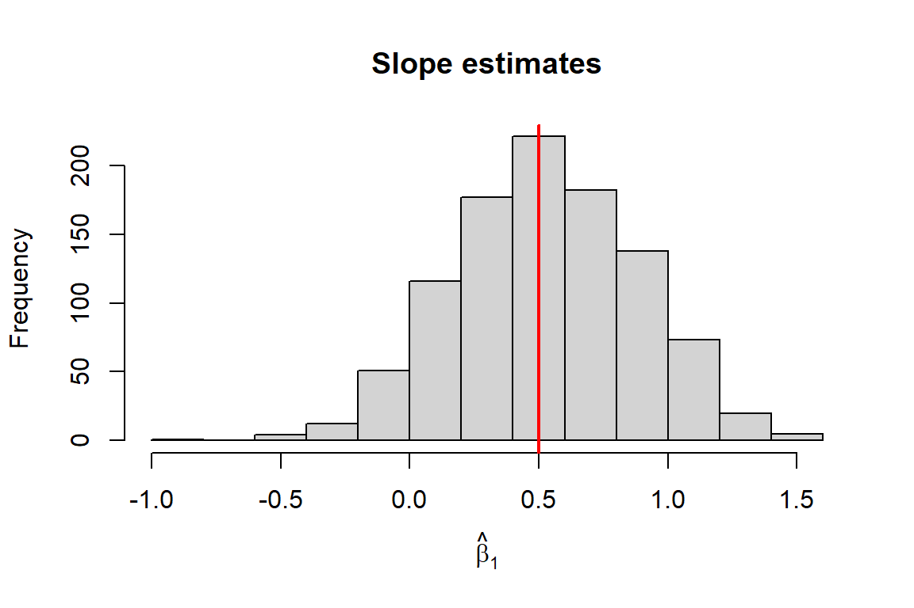
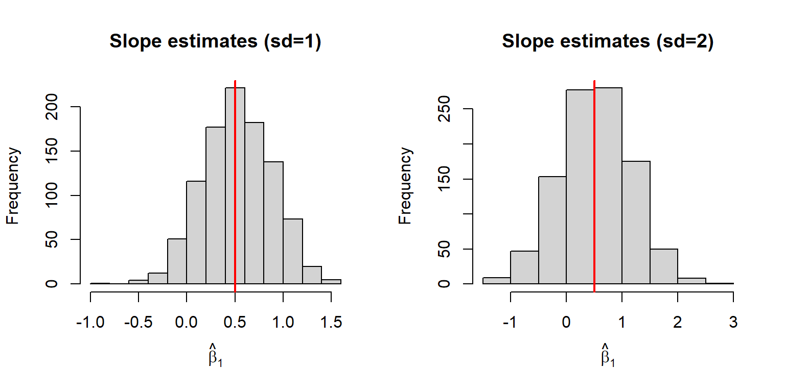
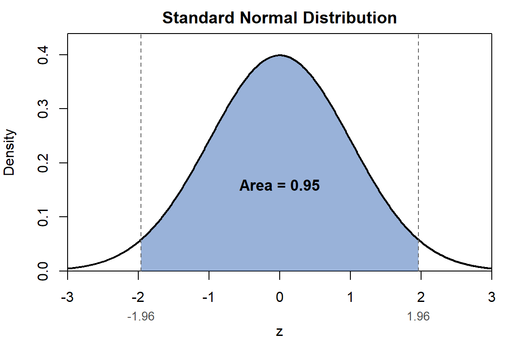
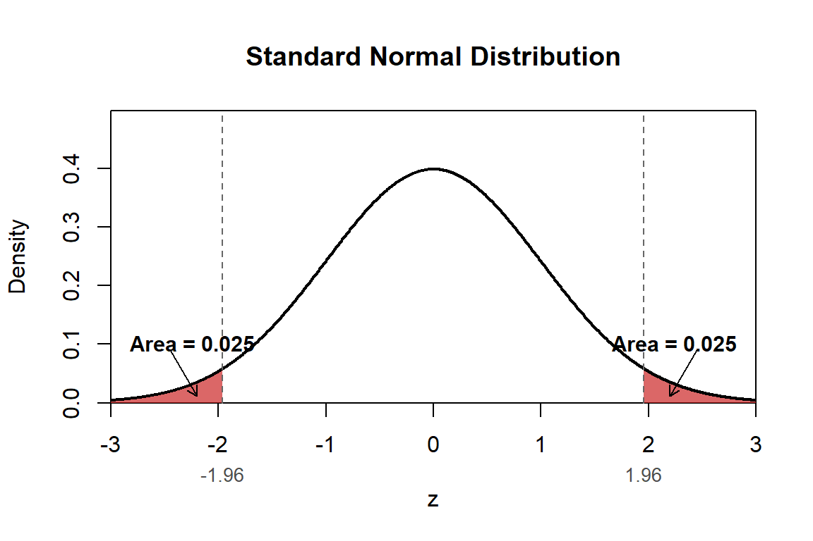
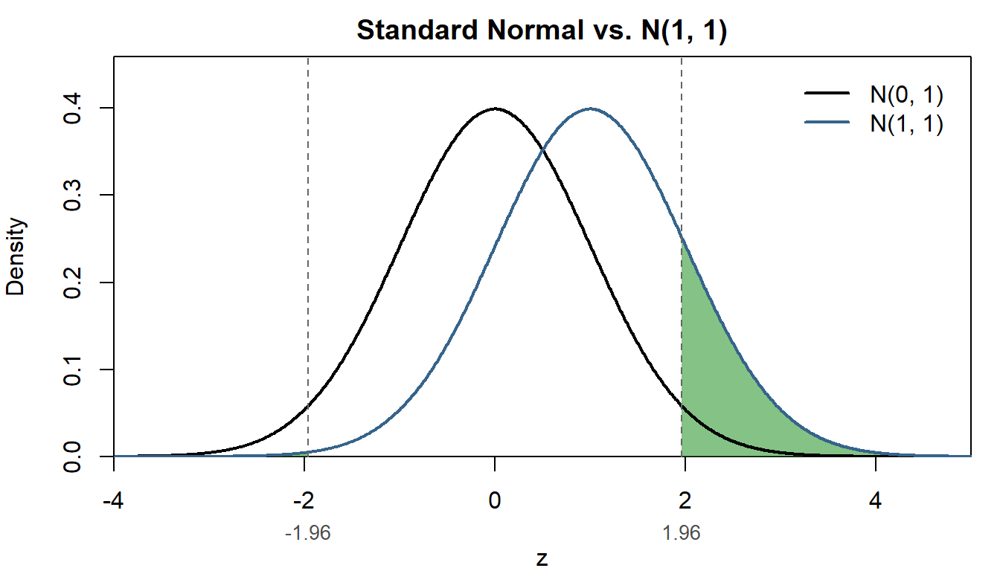

flowchart LR A[Estimator] --> B[Estimand] A --> C[Estimate]
Properties of OLS and Statistical Inference
Lecture 3
In this lecture we investigate the properties of the OLS estimator and how it relates to the assumptions we make about the unobserved population regression model. As we do so it will help to keep in mind the distinction between the estimand, the estimator, and the estimate.
The estimand (\(\beta\)) is an unknown population parameter (i.e., a non-random number); the estimator (\(\hat{\beta}\)) a random variable; and the estimate (e.g. \(0.187\)) a realized value of said random function (i.e. a non-random number).
Accuracy vs Effiency
Accuracy
Is \(\hat{\beta} = \beta\)?
No!
In fact, the statement does not make sense since \(\hat{\beta}\) is a random variable while \(\beta\) is a non-random constant.
If we are accurate, we can ask: \(Pr(\hat{\beta}=\beta)=?\)
The answer is: \(Pr(\hat{\beta}=\beta|\mathbf{x})=0\) for any \(u_i\) with a continuous distribution (conditional on \(\mathbf{x}\)).
Can we expect – a priori – for \(\hat{\beta}\) to be “on target”?
This is a question of biasedness: is \(E[\hat{\beta}] = \beta\)?
The answer: it depends!
Specifically, it depends on the properties of the model!
Note
It is an all to common mistake to conflate the estimator - in particular, the OLS estimator - with the linear regression model. People will say, “We estimate an OLS regression model”. This doesn’t really make sense, since you OLS is the estimator, not the name of the model. You can say, “We estimate a linear regression model using OLS”.
This may seem pedantic, but it is an important distinction since there are a range of estimators that can be used to estimate a linear regression model; all with different properties. In addition, the OLS estimator can be applied to any data, regardless of the true model. So it is a good idea to make sure your language is accurate.
Biasedness
When is the OLS estimator unbias?
\[ E[\hat{\beta}] = \beta \]
Under the assumptions MLR 1-4,
\[ E[\hat{\beta}_j] = \beta_j \qquad j=0,\dots,k \]
Proof
We do not have the math to do this for the multivariate case. However, we can show this for the univariate case:
Under MLR 1-4 (equiv. to Wooldridge’s SLR 1-4)
\[ y_i = \beta_0 + \beta_1 x_i + u_i \]
where \(E[u_i|x_i]=0\).
The OLS estimator for \(\beta_1\) is given by (see Lecture 2):
\[ \begin{aligned} \hat{\beta}_1 =& \frac{\sum_{i=1}^{n}(y_i -\bar{y})(x_{i}-\bar{x})}{\sum_{i=1}^{n}(x_{i}-\bar{x})^2} \\ =& \frac{\sum_{i=1}^{n}y_i(x_{i}-\bar{x})}{\sum_{i=1}^{n}(x_{i}-\bar{x})^2} \\ =& \frac{\sum_{i=1}^{n}y_i(x_{i}-\bar{x})}{\text{SST}_x} \end{aligned} \]
where \(\text{SST}_x=\sum_{i=1}^{n}(x_{i}-\bar{x})^2\)
Substitute the model (\(y_i = \beta_0 + \beta_1 x_i + u_i\)) in:
\[ \begin{aligned} \hat{\beta}_1 =& \frac{\sum_{i=1}^{n}(\beta_0 + \beta_1 x_i + u_i)(x_{i}-\bar{x})}{\text{SST}_x} \\ =& \frac{\beta_0}{\text{SST}_x}\sum_{i=1}^{n}(x_{i}-\bar{x}) + \frac{\beta_1}{\text{SST}_x}\sum_{i=1}^{n}(x_{i}-\bar{x})x_i + \frac{1}{\text{SST}_x}\sum_{i=1}^{n}(x_{i}-\bar{x})u_i \end{aligned} \]
Now we use the fact that:
\[ \hat{\beta}_1 = \frac{\beta_0}{\text{SST}_x}\underbrace{\sum_{i=1}^{n}(x_{i}-\bar{x})}_{=0} + \frac{\beta_1}{\text{SST}_x}\underbrace{\sum_{i=1}^{n}(x_{i}-\bar{x})x_i}_{\text{SST}_x} + \frac{1}{\text{SST}_x}\sum_{i=1}^{n}(x_{i}-\bar{x})u_i \]
To get,
\[ \hat{\beta}_1 = \beta_1 + \frac{1}{\text{SST}_x}\sum_{i=1}^{n}(x_{i}-\bar{x})u_i \]
Now we can take the conditional expectation of \(\hat{\beta}_1\)
\[ \begin{aligned} E[\hat{\beta}_1|x] =& E\Bigg[\beta_1 + \frac{1}{\text{SST}_x}\sum_{i=1}^{n}(x_{i}-\bar{x})u_i\Bigg\vert x\Bigg] \\ =& \beta_1 + E\Bigg[\frac{1}{\text{SST}_x}\sum_{i=1}^{n}(x_{i}-\bar{x})u_i\Bigg\vert x\Bigg] \\ =& \beta_1 + \frac{1}{\text{SST}_x}\sum_{i=1}^{n}(x_{i}-\bar{x})\underbrace{E[u_i|x]}_{=0} \\ =& \beta_1 \end{aligned} \]
Since, \(E[\hat{\beta}_1|x] = \beta_1\), then by the Law of Iterated Expectations (see CEF Material)
\[ E[\hat{\beta}_1] = E\big[E[\hat{\beta}_1|x]\big] = E[\beta_1] = \beta_1 \]
Intuition
Unbiasedness means that in expectation the OLS estimator will give you the true parameter.
- IF MLR 1-4 hold
It also means that we estimated the model over-and-over-again, drawing data from the true DGP, on average we will get the true value.
- For example, if we ran a Monte Carlo simulation (\(R = 1000\)) of the model:
\[ y_i = 2 + 0.5 x_i + u_i \]
Monte Carlo simulation
Code
# Monte Carlo simulation of OLS estimator
# Model: y = 2 + 0.5*x + e, e ~ N(0,1)
set.seed(123) # for reproducibility
n <- 100 # sample size (set as desired)
R <- 1000 # number of Monte Carlo repetitions
b0 <- 2
b1 <- 0.5
# storage for estimates
b0_hat <- numeric(R)
b1_hat <- numeric(R)
# fixed regressor x (redrawn once, held fixed across repetitions)
x <- runif(n, min = 0, max = 1)
for (i in 1:R) {
e <- rnorm(n, mean = 0, sd = 1)
y <- b0 + b1 * x + e
fit <- lm(y ~ x)
b0_hat[i] <- coef(fit)[1]
b1_hat[i] <- coef(fit)[2]
}
# Summary of results
#cat("Mean of intercept estimates:", mean(b0_hat), "\n")
cat("Mean of slope estimates:", mean(b1_hat), "\n")Mean of slope estimates: 0.5282536 Code
#cat("SD of intercept estimates:", sd(b0_hat), "\n")
#cat("SD of slope estimates:", sd(b1_hat), "\n")
# Plot sampling distributions
#par(mfrow = c(1, 2))
#hist(b0_hat, main = "Intercept estimates", xlab = expression(hat(beta)[0]))
#abline(v = b0, col = "red", lwd = 2)
hist(b1_hat, main = "Slope estimates", xlab = expression(hat(beta)[1]))
abline(v = b1, col = "red", lwd = 2)Efficiency
Notice: there was a wide ‘spread’ of estimates in our simulation.
Why?
\[ \hat{\beta}_1 \; \text{is a random variable} \]
which means it has a mean, variance, and distribution
we have established that (under MLR 1-4) its mean is: \(E[\hat{\beta}_1] = \beta_1\).
Variance
The variance of the estimator will depend on the variance of the \(x\)’s and the error term. As before, we can show this more easily for the SLR:
\[ \begin{aligned} Var(\hat{\beta}_1|x) =& E\Big[\big(\hat{\beta}_1-\underbrace{E[\hat{\beta}_1|x]}_{\beta_1}\big)^2\Big|x\Big] \\ =& E\big[(\hat{\beta}_1-\beta_1)^2\big|x\big] \end{aligned} \]
Earlier, we showed that
\[ \hat{\beta}_1 = \beta_1 + \frac{1}{\text{SST}_x}\sum_{i=1}^{n}(x_{i}-\bar{x})u_i \]
Substituting this is, we get:
\[ Var(\hat{\beta}_1|x) = E\Bigg[\bigg(\frac{1}{\text{SST}_x}\sum_{i=1}^{n}(x_{i}-\bar{x})u_i\bigg)^2\Bigg|x\Bigg] \]
After some math…(exploiting MLR-2)
\[ Var(\hat{\beta}_1|x) = \frac{Var(u_i|x_i)}{SST_x} = \frac{\sigma^2}{SST_x} \]
Using MLR-5 (Homoskedasticity).
The larger the variance of error term, the bigger the variance of the estimator
- \(\Rightarrow\) if you add variables that explain more of \(y\) you can reduce the variance.
If you increase the variance in \(x\), you reduce the variance of the estimator.
TipOptimal experiment
In Randomized Control Trials the regressor is a single dummy variable \(w_i=1\) (\(=0\)) if treated (if control). In this case, \(SST_x=n\bar{w}(1-\bar{w})\): a function that is quadratic in \(\bar{w}=1/n\sum_i w_i\) - the share of treated individuals. This function is concave, with a maximum at \(\bar{w} = 0.5\). This tells us that the most efficient assignment is 50-50. With equal treatment, the variance of the estimator is minimized
Simulation
If we run the same Monte Carlo simulation for two cases - \(\sigma = 1\) and \(\sigma = 2\) - we should should see a big difference in the variance of the estimator.
Code
# Monte Carlo simulation of OLS estimator
# Model: y = 2 + 0.5*x + e, e ~ N(0,1)
# storage for estimates
b0_hat2 <- numeric(R)
b1_hat2 <- numeric(R)
# fixed regressor x (redrawn once, held fixed across repetitions)
x <- runif(n, min = 0, max = 1)
for (i in 1:R) {
e <- rnorm(n, mean = 0, sd = 2)
y <- b0 + b1 * x + e
fit <- lm(y ~ x)
b0_hat2[i] <- coef(fit)[1]
b1_hat2[i] <- coef(fit)[2]
}
# Plot sampling distributions
par(mfrow = c(1, 2))
hist(b1_hat, main = "Slope estimates (sd=1)", xlab = expression(hat(beta)[1]))
abline(v = b1, col = "red", lwd = 2)
hist(b1_hat2, main = "Slope estimates (sd=2)", xlab = expression(hat(beta)[1]))
abline(v = b1, col = "red", lwd = 2)Multivariate case
There is an equivalent formula for multivariate linear models:
\[ Var(\hat{\beta}_j|\mathbf{x}) = \frac{Var(u_i|\mathbf{x})}{\text{SSR}_j} = \frac{\sigma^2}{\text{SSR}_j} \]
where \(\text{SSR}_j\) is the residual sum of squares from regressing \(x_j\) on all other regressors.
if other regressors explain a lot of the variation in \(x_j\), it \(\downarrow\text{SSR}_j\Rightarrow \uparrow Var\)
adding regressors to a model has multiple effects in terms of efficiency.
Distribution
Recap
The OLS estimator is a random variable. Under MLR 1-5:
\(E[\hat{\beta}_j] = \beta_j\quad j=0,\dots,k\)
\(Var(\hat{\beta}_j) = \sigma^2/SSR_j\quad j=1,\dots,k\)
\(Var(\hat{\beta}_0) =\)
Normality
Under MLR 6:
\[ \hat{\beta}_j|\mathbf{x} \sim\quad N\big(\beta_j,\,Var(\hat{\beta}_j|\mathbf{x})\big) \]
Why?
\(u_i|\mathbf{x} \sim N(0,\sigma^2)\)
conditional on x, \(\hat{\beta}\) is a linear transformation of \(u\).
Normalization
We can therefore standardize the distribution:
\[ \frac{\hat{\beta}_j-\beta_j}{se(\hat{\beta}_j)} | x \sim N(0,1) \] where \(se(\hat{\beta}_j) = \sqrt{Var(\hat{\beta}_j)}\)
This term - let’s call it \(z=(\hat{\beta}_j-\beta_j)/se(\hat{\beta}_j)\) is another random variable. Since we know the properties \(N(0,1)\), we know:
\(Pr(z<\text{z}_{0.025}) = 0.025\) where \(\text{z}_{0.025} = -1.96\) is the \(2.5^{th}\) percentile of \(N(0,1)\)
\(Pr(z>\text{z}_{0.975}) = 0.025\) where \(\text{z}_{0.975} = 1.96\) is the \(97.5^{th}\) percentile of \(N(0,1)\)
\(Pr(\text{z}_{0.025}<z<\text{z}_{0.975}) = 0.95\) (or 95%)
Confidence Intervals
We can use this knowledge to form confidence intervals for the unknown \(\beta_j\)
\[ \begin{aligned} 0.95 =& Pr(\text{z}_{0.025} < z < \text{z}_{0.975}) \\ =& Pr\Bigg(\text{z}_{0.025} < \frac{\hat{\beta}_j-\beta_j}{se(\hat{\beta}_j)} < \text{z}_{0.975}\Bigg) \\ =& Pr\big(\text{z}_{0.025}\times se(\hat{\beta}_j) < \hat{\beta}_j-\beta_j < \text{z}_{0.975}\times se(\hat{\beta}_j)\big) \\ =& Pr\big(-\hat{\beta}_j+\text{z}_{0.025}\times se(\hat{\beta}_j) < -\beta_j < -\hat{\beta}_j+\text{z}_{0.975}\times se(\hat{\beta}_j)\big) \\ =& Pr\big(\hat{\beta}_j - \text{z}_{0.975}\times se(\hat{\beta}_j) < \beta_j < \hat{\beta}_j - \text{z}_{0.025}\times se(\hat{\beta}_j)\big) \\ \end{aligned} \]
Notice, the percentiles end up on opposite sides.
For symmetric distributions, like Normal, \(\text{z}_{0.975}=- \text{z}_{0.025}\). This gives us the simplified Confidence Interval:
\[ \text{CI}_{0.95} = \big[\hat{\beta}_j - \text{z}_{0.975}\times se(\hat{\beta}_j),\hat{\beta}_j + \text{z}_{0.975}\times se(\hat{\beta}_j)\big] \]
Note
The CI is depends on the estimator \(\hat{\beta}_j\). Since the estimator is random variable, the CI is also random. For this reason, we can ask: what is the probability that \(\beta_j\) lies within the CI.
\[ Pr(\beta_j\in \text{CI}_{0.95}) = 0.95 \] If replaced \(\beta_j\) with another value it the probability would change. This is because the distribution of \(\hat{\beta}_j\) is centered around \(\beta_j\).
Tip
Suppose I estimate \(\hat{\beta}_j = 0.35\;(\text{SE}=0.12)\) and construct the 95% confidence interval:
\[ [0.35 - \text{z}_{0.975}\times 0.12,0.35 + \text{z}_{0.975}\times 0.12] \]
What is the \(Pr\big(\beta_j \in [0.35 - \text{z}_{0.975}\times 0.12,0.35 + \text{z}_{0.975}\times 0.12]\big)\)? You might be tempted to say 95%, but (from a frequentist perspective) you would be wrong. The answer is either \(0\) or \(1\).
Why? The interval you have constructed is not random; it is just two numbers, a lower and upper bound. The question is equivalent to asking what is \(Pr\big(5 \in [1,4]\big)\)? In this case the answer is evidently 0, but if the interval were \([2,6]\) the answer would be 1.
Inference
Null hypothesis
How does this work?
- Establish a null hypothesis
\[ H_0: \beta_j = 0 \]
Note
This is the most common null hypothesis as it essentially states that there is no relationship between \(y\) and \(x_j\). In empirical research, we are often trying to establish whether there is a (causal) relationship bewteen two variables. In order to test this theory we state a null hypothesis that we will reject if the evidence supports our claim.
Why this backward approach? The answer two fold:
The estimator is a random variable, with infinite support. Consistent with \(\beta_j=0\), the estimator can take on any real value \(\mathbb{R}:(-\infty,\infty)\). This means that every value the estimator could take on, is consistent with every unknown value of the true \(\beta_j\).
We solve this problem by restricting probability of rejecting the null hypothesis when it is true (Type 1 error). That is, we design a test to rule out \(H_0\), not rule it in.
If you want to establish that there is a relationship between, for example, smoking and lung cancer, you need to rule out the hypothesis that there is no relationship.
Alternative hypothesis
- The null determines the alternative:
\[ H_1: \beta_j \neq 0 \] If we reject \(H_0\) we conclude \(H_1\). It is NOT accurate to say that we ‘prove’ \(H_1\).
Test Statistic
- Design a test statistic with a known distribution.
We know that under MLR 1-6,
\[ \frac{\hat{\beta}_j-\beta_j}{se(\hat{\beta}_j)} | x \sim N(0,1) \]
Under \(H_0: \beta_j=0\)
\[ \text{Test-stat} = \frac{\hat{\beta}_j-0}{se(\hat{\beta}_j)} | x \underset{H_0}{\sim} N(0,1) \]
Important
In this case, the test statics only has a normal distribution under \(H_0\). If \(H_0\) is not true, then the test statistic has different distribution.
Significance level
- Pick a significance level (\(\alpha\)).1 This is the permitted probability of a type 1 error:
\[ \alpha = Pr(\text{Reject}\; H_0|H_0\;\text{is true}) \]
In Economics, we typically use \(\alpha = \{0.01,0.05,0.10\}\).
Rejection rule
- Determine a rejection rule consistent with a chosen \(\alpha\).
Under \(H_0\),
\[ \text{Test-stat} \underset{H_0}{\sim} N(0,1) \]
\[ \Rightarrow Pr(-1.96 < \text{Test-stat} < 1.96 | H_0) = 0.95 \]
Code
x <- seq(-3, 3, length.out = 1000)
y <- dnorm(x)
par(mar = c(4, 4, 2, 1))
plot(x, y, type = "l", lwd = 2, col = "black",
xlim = c(-3, 3),
xlab = "z", ylab = "Density",
main = "Standard Normal Distribution",
xaxs = "i", yaxs = "i", ylim = c(0, max(y) * 1.1))
# Shade the area between -1.96 and 1.96
x_shade <- seq(-1.96, 1.96, length.out = 500)
y_shade <- dnorm(x_shade)
polygon(c(x_shade[1], x_shade, tail(x_shade, 1)),
c(0, y_shade, 0),
col = rgb(0.20, 0.40, 0.70, 0.5), border = NA)
# Re-draw the curve on top so the outline stays crisp over the shading
lines(x, y, lwd = 2, col = "black")
# Reference lines at the cutoffs
abline(v = c(-1.96, 1.96), lty = 2, col = "gray40")
# Label the shaded area
text(0, dnorm(0) * 0.4, "Area = 0.95", cex = 1.1, font = 2)
# Label the cutoff values on the x-axis
axis(1, at = c(-1.96, 1.96), labels = c("-1.96", "1.96"),
line = 1.1, tick = FALSE, cex.axis = 0.85, col.axis = "gray30")
Reject \(H_0\) if: \(\text{Test-stat}>1.96\) or \(\text{Test-stat}<-1.96\)
\[ \Rightarrow \text{Reject if}\quad |\text{Test-stat}|>1.96 \]
Code
plot(x, y, type = "l", lwd = 2, col = "black",
xlim = c(-3, 3),
xlab = "z", ylab = "Density",
main = "Standard Normal Distribution",
xaxs = "i", yaxs = "i", ylim = c(0, max(y) * 1.25))
# --- Left tail: x <= -1.96 ---
x_left <- seq(-3, -1.96, length.out = 200)
y_left <- dnorm(x_left)
polygon(c(x_left[1], x_left, tail(x_left, 1)),
c(0, y_left, 0),
col = rgb(0.80, 0.15, 0.15, 0.7), border = NA)
# --- Right tail: x >= 1.96 ---
x_right <- seq(1.96, 3, length.out = 200)
y_right <- dnorm(x_right)
polygon(c(x_right[1], x_right, tail(x_right, 1)),
c(0, y_right, 0),
col = rgb(0.80, 0.15, 0.15, 0.7), border = NA)
# Re-draw the curve on top so the outline stays crisp over the shading
lines(x, y, lwd = 2, col = "black")
# Reference lines at the cutoffs
abline(v = c(-1.96, 1.96), lty = 2, col = "gray40")
# Labels for each tail, placed above the curve with an arrow pointing
# down into the shaded region (the tails are too thin to hold text)
arrows(x0 = -2.45, y0 = 0.09, x1 = -2.20, y1 = 0.012,
length = 0.08, col = "black", lwd = 1.2)
text(-2.95, 0.10, "Area = 0.025", cex = 0.95, font = 2, pos = 4)
arrows(x0 = 2.45, y0 = 0.09, x1 = 2.20, y1 = 0.012,
length = 0.08, col = "black", lwd = 1.2)
text(2.95, 0.10, "Area = 0.025", cex = 0.95, font = 2, pos = 2)
# Label the cutoff values on the x-axis
axis(1, at = c(-1.96, 1.96), labels = c("-1.96", "1.96"),
line = 1.1, tick = FALSE, cex.axis = 0.85, col.axis = "gray30")
Type 2 errors
We’ve limited the probability of type 1 errors to \(\alpha\), but what about ytype 2 errors?
\[ Pr(\text{Fail to reject}\;H_0|H_0\;\text{is false}) = ? \]
What do we mean by \(H_0\) is false?
- not \(H_0\Rightarrow \beta_j\neq 0\); a lot of possibilities.
Power function
Suppose \(\beta_j = \kappa\).
\[ Pr(\text{Reject}\;H_0|\beta_j = \kappa) \]
We call this the power function. And,
\[ 1-Pr(\text{Reject}\;H_0|\beta_j = \kappa) = Pr(\text{Type 2 error}) \]
- Higher power \(\rightarrow\) lower probability of type 2 error.
We know what this function looks like:
\[ \begin{aligned} Pr(\text{Reject}\;H_0|\beta_j = \kappa) =& Pr(|\text{Test-stat}|>1.96|\beta_j = \kappa) \\ =& Pr\Bigg(\Bigg| \frac{\hat{\beta}_j-0}{se(\hat{\beta}_j)}\Bigg|>1.96\Bigg|\beta_j = \kappa\Bigg) \\ =& Pr\Bigg(\frac{\hat{\beta}_j-0}{se(\hat{\beta}_j)}<-1.96\Bigg|\beta_j = \kappa\Bigg) + Pr\Bigg(\frac{\hat{\beta}_j-0}{se(\hat{\beta}_j)}>1.96\Bigg|\beta_j = \kappa\Bigg) \end{aligned} \]
This probablity is not \(0.05\) because \(\beta_j \neq 0\).
We have to add and subtract \(\kappa/se(\hat{\beta}_j)\).
\[ \begin{aligned} Pr(\text{Reject}\;H_0|\beta_j = \kappa) =& Pr\Bigg(\frac{\hat{\beta}_j-\kappa}{se(\hat{\beta}_j)}+\frac{\kappa-0}{se(\hat{\beta}_j)}<-1.96\Bigg|\beta_j = \kappa\Bigg) + Pr\Bigg(\frac{\hat{\beta}_j-\kappa}{se(\hat{\beta}_j)}+\frac{\kappa-0}{se(\hat{\beta}_j)}>1.96\Bigg|\beta_j = \kappa\Bigg) \\ =& Pr\Bigg(\underbrace{\frac{\hat{\beta}_j-\kappa}{se(\hat{\beta}_j)}}_{\sim N(0,1)}<-1.96-\frac{\kappa}{se(\hat{\beta}_j)}\Bigg|\beta_j = \kappa\Bigg) + Pr\Bigg(\underbrace{\frac{\hat{\beta}_j-\kappa}{se(\hat{\beta}_j)}}_{\sim N(0,1)}>1.96-\frac{\kappa}{se(\hat{\beta}_j)}\Bigg|\beta_j = \kappa\Bigg) \\ =& \Phi\big(-1.96-\kappa/se(\hat{\beta}_j)\big) + 1- \Phi\big(1.96-\kappa/se(\hat{\beta}_j)\big) \\ \geq & 0.05 \end{aligned} \]
Under the null hypothesis we assumed the distribution of \(\hat{\beta}_j\) was centered on 0, when it is actually \(\kappa\). This yields a probability of rejection greater than \(0.05=\alpha\).
Suppose \(\kappa/se(\hat{\beta}_j)=1\). Conditional on \(\beta_j=\kappa\), the standardized test statistic is actually centered around 1.
Code
x <- seq(-4, 5, length.out = 1000)
y0 <- dnorm(x, mean = 0, sd = 1) # null distribution
y1 <- dnorm(x, mean = 1, sd = 1) # alternative distribution
par(mar = c(4, 4, 2, 1))
plot(x, y0, type = "l", lwd = 2, col = "black",
xlim = c(-4, 5),
xlab = "z", ylab = "Density",
main = "Standard Normal vs. N(1, 1)",
xaxs = "i", yaxs = "i", ylim = c(0, max(y0, y1) * 1.15))
# --- Shade N(1,1) area left of -1.96 ---
x_left <- seq(-4, -1.96, length.out = 200)
y_left <- dnorm(x_left, mean = 1, sd = 1)
polygon(c(x_left[1], x_left, tail(x_left, 1)),
c(0, y_left, 0),
col = rgb(0.20, 0.60, 0.20, 0.6), border = NA)
# --- Shade N(1,1) area right of 1.96 ---
x_right <- seq(1.96, 5, length.out = 200)
y_right <- dnorm(x_right, mean = 1, sd = 1)
polygon(c(x_right[1], x_right, tail(x_right, 1)),
c(0, y_right, 0),
col = rgb(0.20, 0.60, 0.20, 0.6), border = NA)
# Draw both curves on top of the shading
lines(x, y0, lwd = 2, col = "black")
lines(x, y1, lwd = 2, col = "steelblue4")
# Vertical reference lines at the rejection-rule cutoffs
abline(v = c(-1.96, 1.96), lty = 2, col = "gray40")
# Label the cutoff values on the x-axis
axis(1, at = c(-1.96, 1.96), labels = c("-1.96", "1.96"),
line = 1.1, tick = FALSE, cex.axis = 0.85, col.axis = "gray30")
legend("topright", inset = 0.02,
legend = c("N(0, 1)", "N(1, 1)"),
col = c("black", "steelblue4"), lwd = 2, bty = "n")
The probability of rejecting increases as \(\kappa\) moves further from \(0\) (the value under \(H_0\)).
Power function
Code
power_fn <- function(kappa, se) {
1 - pnorm(1.96 - kappa / se) + pnorm(-1.96 - kappa / se)
}
kappa <- seq(-6, 6, length.out = 1000)
power <- power_fn(kappa, se = 1.5)
par(mar = c(4, 4, 2, 1))
plot(kappa, power, type = "l", lwd = 2, col = "steelblue4",
xlim = c(-6, 6), ylim = c(0, 1),
xlab = expression(kappa), ylab = "Power",
main = "Power Function (SE = 1.5)",
xaxs = "i", yaxs = "i")
# Reference line at kappa = 0 (the null) and the significance level
abline(v = 0, lty = 2, col = "gray40")
abline(h = 0.05, lty = 3, col = "gray40")
text(0, 0.05, expression(alpha == 0.05), pos = 3, cex = 0.85, col = "gray30")
More power
One way to increase power is to reduce the SE.
Code
power_15 <- power_fn(kappa, se = 1.5)
power_10 <- power_fn(kappa, se = 1.0)
plot(kappa, power_15, type = "l", lwd = 2, col = "steelblue4",
xlim = c(-6, 6), ylim = c(0, 1),
xlab = expression(kappa), ylab = "Power",
main = "Power Function", xaxs = "i", yaxs = "i")
lines(kappa, power_10, lwd = 2, col = "firebrick3")
legend("topright", inset = 0.02,
legend = c("SE = 1.5", "SE = 1.0"),
col = c("steelblue4", "firebrick3"), lwd = 2, bty = "n")
Variance estimator
‘Sleight of hand’
All our computations have assumed knowledge of,
\[ Var(\hat{\beta}_j|\mathbf{x}) = \frac{Var(u_i|\mathbf{x})}{\text{SSR}_j} = \frac{\sigma^2}{\text{SSR}_j} \]
BUT,
\[ Var(u_i|\mathbf{x}) = \sigma^2 \]
Is an unknown population parameter.
Estimator
We replace \(\sigma^2\) with its estimator:
\[ s^2 = \frac{1}{n-k-1}\sum_{i=1}^n\hat{u}_i^2 \]
Why \(n-k-1\)?
\(\frac{1}{n}\sum_{i=1}\hat{u}_i^2\) is a biased estimator for \(\sigma^2\)
\(n-k-1\) are referred to as the residual degrees of freedom
t-distribution
When we substitue \(\sigma^2\) for \(s^2\), the recentered estimator has a (Student’s) t-distribution
\[ \frac{\hat{\beta}_j-\beta_j}{\widehat{se}(\hat{\beta}_j)} | x \sim T_{n-k-1} \]
where,
\[ \widehat{se}(\hat{\beta}_j) = \sqrt{\frac{s^2}{SSR_j}} \]
TipStudent’s t-distribution
If \(z\sim N(0,1)\) and \(w\sim \chi ^2_{m}\) then,
\[ \frac{z}{w}\sim T_m \]
Note, a chi-squared distribution is defined as the sum of squared standard normals
\[ \sum_{l=1}^{m}z_l^2 \sim \chi ^2_{m} \]
t-statistic
For \(H_0: \beta_j = 0\)
\[ \text{Test-stat} = \frac{\hat{\beta}_j}{\widehat{se}(\hat{\beta}_j)} | x \underset{H_0}{\sim} T_{n-k-1} \]
This is often referred to as the t-statistic in is reported as a default test parameter in regression output.
Example
* Open data
use "data/lcf_2023.dta", clear
* Estimate univariate linear regression
regress hhcon hhinc Source | SS df MS Number of obs = 200
-------------+---------------------------------- F(1, 198) = 57.08
Model | 4842359.39 1 4842359.39 Prob > F = 0.0000
Residual | 16798378.5 198 84840.2954 R-squared = 0.2238
-------------+---------------------------------- Adj R-squared = 0.2198
Total | 21640737.9 199 108747.427 Root MSE = 291.27
------------------------------------------------------------------------------
hhcon | Coefficient Std. err. t P>|t| [95% conf. interval]
-------------+----------------------------------------------------------------
hhinc | .2705895 .0358165 7.55 0.000 .1999587 .3412203
_cons | 268.0611 37.42847 7.16 0.000 194.2515 341.8707
------------------------------------------------------------------------------# Packages
library(haven)
# Load the Stata file
lcf_data <- read_dta("data/lcf_2023.dta")
# Estimate univariate linear regression
model1 <- lm(hhcon ~ hhinc, data = lcf_data)
# View results
summary(model1)
Call:
lm(formula = hhcon ~ hhinc, data = lcf_data)
Residuals:
Min 1Q Median 3Q Max
-519.70 -177.46 -60.08 95.78 1473.71
Coefficients:
Estimate Std. Error t value Pr(>|t|)
(Intercept) 268.06105 37.42847 7.162 1.53e-11 ***
hhinc 0.27059 0.03582 7.555 1.52e-12 ***
---
Signif. codes: 0 '***' 0.001 '**' 0.01 '*' 0.05 '.' 0.1 ' ' 1
Residual standard error: 291.3 on 198 degrees of freedom
Multiple R-squared: 0.2238, Adjusted R-squared: 0.2198
F-statistic: 57.08 on 1 and 198 DF, p-value: 1.515e-12Critical values
For normally distributed test-statistic, the critical value(s) for a two-sided \(\alpha=0.05\) (significance level) test are \(\{-1.96,1.96\}\).
The t-distribution is similarly symmetric:
qt(0.025, df = 50)[1] -2.008559qt(0.975, df = 50)[1] 2.008559And as \(n-k-1\) increases, the values converge to \(\text{z}_{0.975} = 1.96\). (More on this in Week 5.)
qt(0.975, df = 100)[1] 1.983972qt(0.975, df = 200)[1] 1.971896qt(0.975, df = 400)[1] 1.965912qnorm(0.975)[1] 1.959964Hypothesis tests using t-distribution are more ‘conservative’ relative to normal.
Useful code
* Standard normal distribution
** Evaluate point on CDF: i.e., probability below 0.675
dis normal(0.675)
** Percentile of CDF
dis invnormal(0.975)
* t-distribution
** Evaluate point on CDF (df = 100): i.e., probability below 0.675
dis t(100, 0.675)
** Percentile of CDF (df = 100)
dis invt(100, 0.975).75016212
1.959964
.74938326
1.9839715# Standard normal distribution
## Evaluate point on CDF: i.e., probability below 0.675
pnorm(0.675)[1] 0.7501621## Percentile of CDF
qnorm(0.975)[1] 1.959964## t-distribution
## Evaluate point on CDF (df = 100): i.e., probability below 0.675
pt(0.675, 100)[1] 0.7493833## Percentile of CDF (df = 100)
qt(0.975, 100)[1] 1.983972Footnotes
Also referred to as the ‘size’ of the test.↩︎